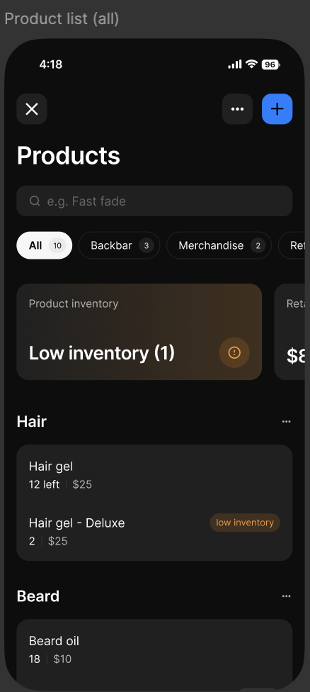
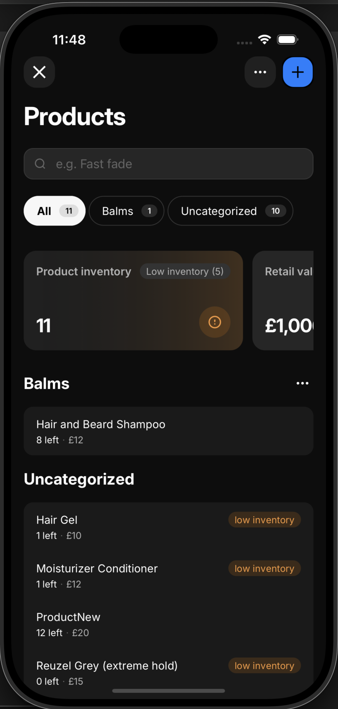
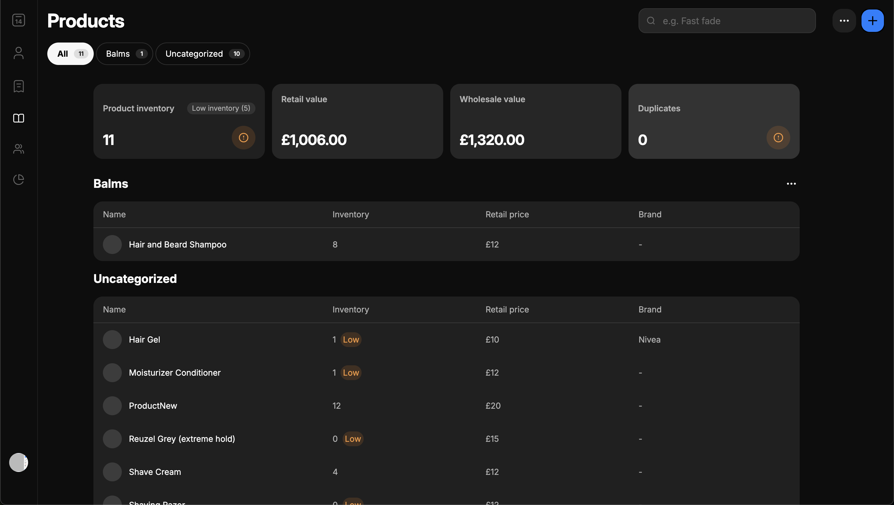
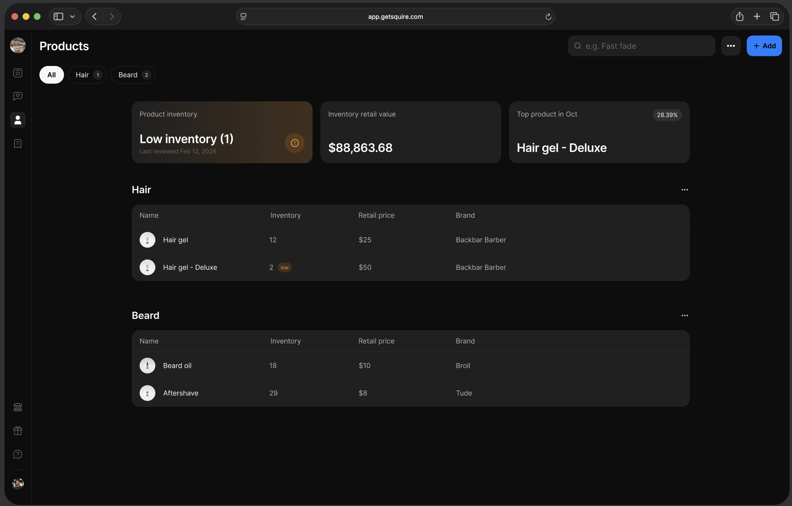

Everything has a place. Here's how to think about it.
Workshop 2 of 5 · Open to all roles
Artur Badretdinov
Presenter
THE TERMINAL
Claude Code runs in your terminal or Desktop App. Same brain, different window.
CONTEXT WINDOW
Your desk has limited space. Use /clear, /compact, pick the right model.
CLAUDE.MD
Your team's playbook. Shared conventions, loaded every session.
Today we answer: how do you connect Claude to your tools and teach it your workflows?
2022-23
CHAT: Text in, text out
LLMs could only talk. Ask a question, get an answer. No files, no APIs, no actions. A brain in a jar.
2024
TOOLS: LLMs learn to act
Function calling. Tool use. The brain gets hands - it can call APIs, query databases, run code. But every integration is bespoke. N agents x M tools = N×M custom wiring.
2024-25
MCP: A standard protocol
Model Context Protocol standardizes the wiring. Build one MCP server, any agent can use it. Jira, Slack, Figma, Sentry - all connected through one protocol. The N×M problem becomes N+M.
NOW
SKILLS: LLMs learn to think consistently
Packaged expertise. The brain has hands AND training. It doesn't just act - it follows your team's procedures, applies domain knowledge, and gets better over time.
Today's session covers the last two leaps: MCP (the standard plumbing) and Skills (the playbook).
MCP (MODEL CONTEXT PROTOCOL)
Protocol for exposing RPCs as tools
How you connect Claude to external services. The protocol is separate from implementation quality.
SKILLS
Organized collections of files that package procedural knowledge
Loaded on-demand - minimal context footprint. Encode how to do something, not what to do it with.
TOOLS
Function calls exposed to the agent grammar
JSON schema describes parameters. MCP servers expose collections of tools. Slightly heavier context cost.
"MCP is the plumbing connecting Claude to the outside world. Skills are the playbook of procedural knowledge."
| MCP (Plumbing) | Skills (Playbook) | |
|---|---|---|
| Provides | Connectivity - what you can reach | Knowledge - how to do it right |
| Context cost | Higher (+ JSON schema) | Low (prompt + description) |
| Best for | Network services, authenticated APIs | Reusable prompts, team workflows |
| Example | Jira, Slack, Figma, Sentry | "Create a PR with our format" |
You connect the Jira MCP. Claude can now read tickets - that's the plumbing. But a skill tells it: "When you read a ticket, extract acceptance criteria, check for missing edge cases, cross-reference the codebase, and draft a test plan." That's the playbook. Plumbing alone gets you raw data. Plumbing + playbook gets you expertise.
MCP = THE PLUMBING
Pipes connecting Claude to the outside world. Jira, Slack, Figma, Sentry. Always available, invisible when working.
SKILLS = THE PLAYBOOK
Step-by-step procedures. "Here's how we do PRs at Squire - conventional commits, test plan, tag reviewers, link the ticket."
With just plumbing, Claude can flush the toilet.
With plumbing + playbook, Claude can renovate the bathroom.
They're complementary, not competing.
The most common objection to MCP. Here's why tool calling is more complicated than you think.
What MCP gives you that OpenAPI doesn't:
Dynamic tools
Tools that come and go during agent execution depending on server state.
stdio transport
Run as a subprocess over stdin/stdout. No HTTP overhead. Extremely useful for local tools.
OAuth-native auth
Authentication baked into the protocol. Built once, works for all services. Not bolted on.
Context steering
Tool responses shape the agent's next move. Rich output, not just return values.
The browser analogy:
"The agent doesn't need to be designed with those tools in mind. Those tools can be designed without knowing anything about the agent. Just like a browser and a website don't need to know about each other."
MCP follows the same idea as the web: many different clients, all connecting over the same protocol. The tool doesn't care which agent calls it.
Prompts and Resources are useful for coding agents (Cursor, Claude Code). Tool calling is the primitive that matters for everything else - and it's far richer than a REST endpoint.
You don't pick a transport - the server does. But it helps to know what's happening under the hood.
Local / stdio
Runs on your machine as a subprocess
Fast, private, no network. The MCP server launches alongside Claude and communicates directly.
→ Playwright, local databases, file tools
SSE (Streaming)
Server pushes updates over HTTP
For real-time data. The server can send progress updates while a long task runs.
→ CI status, monitoring, live dashboards
HTTP
Classic request-response over the web
The most common for cloud services. Claude sends a request, server responds with data.
→ Jira, Slack, Sentry, Stripe, Figma
As a user, you just run /mcp and connect. The transport is chosen by the server, not by you.
Available MCP servers:
Use claude mcp add to install servers. /mcp only manages servers already added. One-time setup per service.
| Read | Write | |
|---|---|---|
| What | Query, fetch, search | Create, update, delete, send |
| Risk | Data exposure, over-fetching | Unintended actions, data loss |
| Example | Slack: read channels | Slack: send a message as you |
| Trust | Low stakes - observe | High stakes - act |
Sentry's approach: capability picker
Choose which tool groups to enable upon authorization. Optimizes token consumption AND sets permissions in one step.
Real risks to know:
Blast radius
A write to Slack hits a real channel. No undo.
Prompt injection
Malicious content in fetched data could trigger unintended writes.
Approval fatigue
"Allow all" is one click away. Scope creep is real.
OAuth-native auth
Baked into the MCP spec. Secure by default when used.
"Read access answers questions. Write access takes action. The gap between them is where trust lives."
The problem is implementations, not the protocol.
Too many tools exposed
More tools = more wasted tokens + worse model recall
Bad API wrappers
Many MCP servers are thin shims that should've been skills
No capability scoping
All-or-nothing tool exposure. No granular control.
Three overlooked wins:
1. Authentication
OAuth-native - not bolted on, baked in. Built once for all services.
2. Context steering
Tool RESPONSES steer the agent. Sentry returns hints: "You might want to call XYZ." You shape the next move through output.
3. Capability scoping
Choose which tool groups to enable per session. Minimize blast radius + optimize tokens.
Bad implementations != bad protocol. Judge MCP by its best, not its worst.
Every MCP tool you connect costs tokens before a single user message is sent.
The problem (was real):
| Integration | Tools | Tokens |
|---|---|---|
| GitHub | 35 | ~26,000 |
| Slack | 11 | ~21,000 |
| Sentry | 5 | ~3,000 |
| Grafana | 5 | ~3,000 |
| Total | 58 | ~55,000 |
That's 45% of a 128K context window - before you type anything.
Perplexity dropped MCP internally citing 72% context window waste. The token math was brutal.
The fix (already shipped):
Deferred tool loading (Claude Code)
All tool definitions are now lazy-loaded by default. The model sees only tool names upfront, fetches full schemas on demand. That 55K+ token wall is now a handful of name-only lines.
MCP proxy aggregators (Rube, MCProxy)
Services like Rube connect 500+ apps through a single MCP server. Instead of loading all tools, a meta-tool (RUBE_SEARCH_TOOLS) inspects your task and returns only the relevant subset.
Capability scoping (Sentry model)
Choose which tool groups to enable. Don't expose 58 tools when you need 5.
The context tax used to be brutal. Deferred loading, proxy aggregators, and scoping have largely solved it. Connecting MCP servers is now cheap. Run /context to see how much of your window is used - check it before and after adding MCPs.
Example: gh CLI (GitHub)
Claude Code already knows how to use gh - it's a CLI on your machine. No MCP server needed. No auth flow. No tool schema overhead.
Skip MCP when:
The tool is a local CLI the agent already knows
There's no auth boundary to cross
The integration is prompt-driven, not API-driven
But sometimes you DO need MCP:
Playwright is the perfect example. It exists as both a skill and an MCP:
SKILL: writing tests
Teaches test patterns. Agent uses npx playwright test. No server.
MCP: controlling a live browser
Structured tools: navigate, click, screenshot. Stateful session.
The skill is the playbook. MCP is the plumbing.
Claude doesn't just use existing CLIs - it can write scripts on the fly to solve problems no tool was built for.
Need to parse a CSV, hit an API with custom logic, transform data between formats? Claude writes a script, runs it, and gives you the result.
And here's the bridge to skills:
If Claude keeps writing the same script for you, save it as a skill. What starts as an ad-hoc script becomes a reusable piece of your team's playbook.
Ad-hoc script → works well → save to a skill → team shares it → everyone benefits. Scripts are prototypes. Skills are the production version.
Claude chose the right tool for the job - without being told.
The task: create 262 feature flags across 4 PostHog projects
That's 1,048 individual MCP calls. Claude did the math and made a judgment call:
"Creating 262 flags x 4 projects = 1,048 individual MCP calls will be very slow. Do you have a PostHog personal API key I can use to bulk-create via the API directly?"
What happened:
Claude used MCP to discover the projects, then realized MCP was the wrong instrument for bulk work. It searched for an API key, didn't find one, and asked the human instead of plowing through 1,048 slow calls.
MCP is great for discovery and structured interaction. But a smart agent knows when to bypass MCP and use the API directly. The best tool isn't always the most structured one.
THE GENIUS
A mathematical genius who has to derive tax codes from first principles every time you ask a tax question.
Brilliant. But slow, expensive, and error-prone on specialized work.
THE TAX PROFESSIONAL
An experienced professional who already knows the tax code and applies it instantly.
Skills turn the genius into the professional.
Agents today are brilliant but lack expertise.
They can't absorb your organizational knowledge. They don't learn over time. Every conversation starts from scratch.
Skills solve this.
They package procedural knowledge so the agent doesn't have to figure it out every time. Claude on day 30 should outperform Claude on day 1.
"Organized collections of files that package composable procedural knowledge for agents."
At their core, skills are just folders with a deliberate, minimal design.
Progressive disclosure
Only name + description loaded at first. Full content on invocation. Prevents context window explosion.
Self-documenting code
Scripts, instructions, assets - all stored in the file system. Agents can read AND modify them.
Three categories
Foundational (built by Anthropic) + Third-party (ecosystem) + Enterprise (your org's knowledge)
SKILL.md is the entry point - it points to scripts, templates, and docs in the folder. The agent reads the skill, then uses the bundled assets. Just a folder you commit to your repo.
Where skills fit in the bigger picture.
SKILLS = APPLICATIONS
Where millions of developers encode domain expertise.
Anyone can create and share them. Git-compatible. Composable.
AGENT RUNTIME = OPERATING SYSTEM
Claude Code, Cursor, etc. Manages information flow to/from models.
MCP connections live here. Tools, file system access, code execution.
MODELS = PROCESSORS
Massive investment, inherent potential, limited standalone value.
Few companies build these. Opus, Sonnet, Haiku, GPT, etc.
Just as few companies build processors while millions create apps -
the real innovation happens at the skill layer.
Team-shareable: Commit skills to your repo. Everyone gets the same workflows. Version control them like code.
Who can build skills?
PR workflows, code review standards, deployment checklists
Spec templates, ticket formatting, release notes
Test plan generation, edge case patterns, regression scripts
Meeting summaries, status updates, onboarding guides
Non-technical professionals in finance, legal, recruiting, and accounting are creating skills. You don't need to code - you need domain expertise.
70+ skills. Zero MCP servers.
GSD turns Claude Code into a full project management system - roadmaps, research, planning, execution, verification, code review - all from prompt engineering alone.
Skills spawn sub-agents, manage state through markdown files, and coordinate multi-phase projects.
No protocol overhead. No server process. Just reusable prompts that compose.
GSD demonstrates the ceiling of what skills alone can achieve. If your workflow is prompt-driven - skills are enough.
Every tool you expose costs tokens before a single user message is sent.
Skills use progressive disclosure (metadata first). MCP uses deferred loading (names first). Same idea, both win.
The ecosystem is self-organizing.
Marketplaces are emerging the same way npm, VS Code extensions, and app stores did.
The ecosystem is compounding:
Thousands of skills deployed within weeks of launch.
Skill complexity is growing:
Simple: markdown instructions
Medium: scripts + assets + instructions
Complex: software packages with binaries, weeks to develop
Testing, versioning, dependencies, composability - skills are becoming real software. Treat them that way.
/mcp only manages servers already added. Use claude mcp add to install. Full docs →
Available first-party MCPs:
One-time setup per service. OAuth handles auth. Full docs →
The --scope flag controls where config is stored and who shares it.
~/.claude.json.mcp.json in project root~/.claude.jsonNote: local was called project in older versions. user was called global. Full docs →
Where skills live:
| Scope | Path |
|---|---|
| Personal | ~/.claude/skills/<name>/ |
| Project | .claude/skills/<name>/ |
| Enterprise | Managed settings (org-wide) |
Personal skills work across all projects. Project skills commit to the repo - everyone on the team gets them.
Key frontmatter options:
Plugins bundle skills, MCP servers, agents, and configuration into a single installable package.
What's in a plugin?
A plugin can include any combination of skills, MCP servers, sub-agents, CLAUDE.md rules, and hooks - all installed at once.
Type /plugin to browse. Search by name. Space to toggle. One command to install. Browse plugins →
Claude connects to your tools in two ways - through the web or through the Desktop app.
REMOTE CONNECTORS (WEB)
Cloud-based services, accessible everywhere
Works across all Claude surfaces - web, mobile, Cowork, Desktop, and Claude Code.
Use for:
Slack, Notion, Linear, GitHub, Jira, Google Drive, company SaaS tools
Setup:
Settings → Connectors, or browse the Connectors Directory
DESKTOP EXTENSIONS (LOCAL)
Locally-running tools, OS-level access
Works in Claude Desktop and Claude Code only. Not on web or mobile.
Use for:
Local files, databases on localhost, desktop apps, filesystem, clipboard
Setup:
Claude Desktop → Settings → Extensions
Remote connectors = cloud services, works everywhere. Desktop extensions = local tools, needs the app.
One place to share, discover, and reuse.
We've built an internal marketplace - a single place across the org to store, share, and discover commonly used skills, agents, services, and more.
No more hunting across teams to find what's already been built.
Contribute your skills
Built a useful skill? Add it so everyone benefits.
Discover what exists
Browse skills your teammates have already created.
Give feedback
It's early. Your input shapes what this becomes.
Screenshot this slide.
Claude reads the design, applies the mobile DLS, and ships the component.


Claude reads the design, applies the web DLS, and ships the component.


Session 2 of 5 complete
HOMEWORK
1. Connect at least one MCP server (Atlassian, Slack, or Figma)
2. Try a built-in skill: /commit or /batch
3. Write a custom SKILL.md for a team workflow
4. Read a Jira ticket through Claude (MCP in action)
NEXT SESSION
Session 3: Subagents, Agent Teams & Hooks
Deep dive into parallel agents, hooks system, and building agent workflows.
Presented by Jonathan
LIVE DEMO
MCP & Skill Marketplaces
Browse claude.ai/integrations and mcpmarket.com — what's available out of the box and what Squire already has connected.
Setting It Up in Claude Desktop
Add an MCP server live — claude mcp add, OAuth flow, and picking capabilities.
GSD in Claude Code
Run /gsd-plan-phase on a real ticket — skills orchestrating agents, reading Jira, writing code, opening a PR.
Sessions build on each other. Attending in order is recommended.
Now go connect your tools and build your skills.
Resources
modelcontextprotocol.io - MCP spec & docs
mcpmarket.com - Browse MCP tools and skills
Claude Code docs - Skills, MCP setup, agent config
Questions? Ideas? Screenshots?
#claude-code-workshop
Session 2 of 5 - See you at Session 3 with Jonathan!